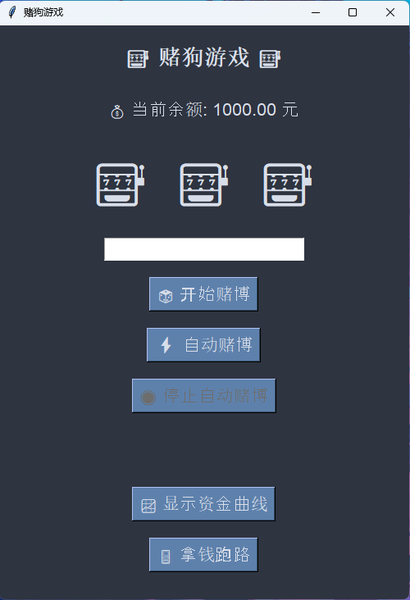
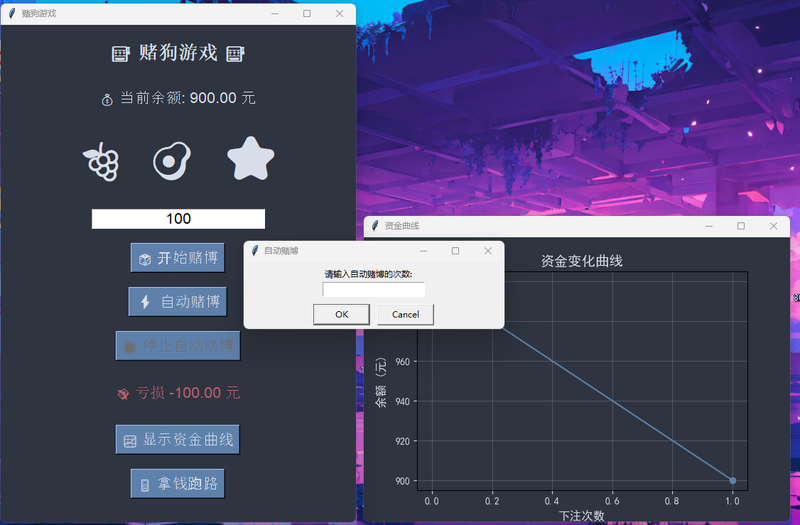
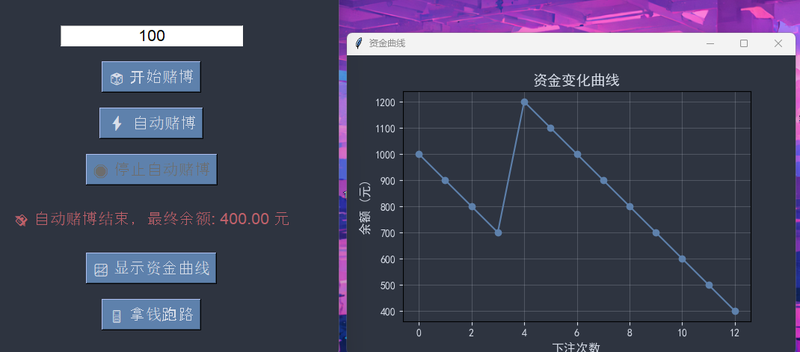
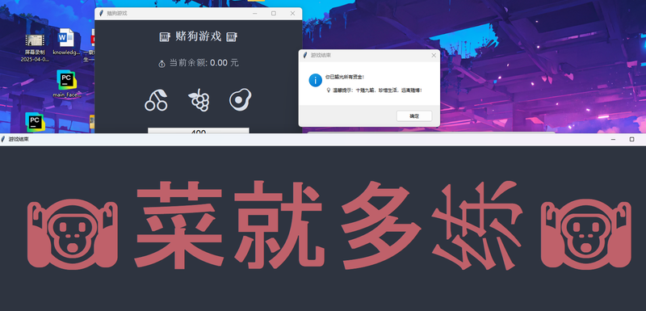

一个教育性质的赌博行为模拟器，通过实时资金曲线和历史记录警示赌博危害
概率统计课程的作业。通过模拟赌博过程中资金变化的全过程，直观展示"久赌必输"的数学规律——用数据可视化的方式揭示赌博风险，强化远离赌博的警示效果。
点击图片可放大查看



这个是我们概率统计老师让我们做的作业，我就设计了这个赌博模拟警示程序。用 tkinter 写了个简单的 GUI，配合 Matplotlib 画资金变化曲线，核心逻辑就是随机输赢概率模拟。虽然功能不复杂，但警示效果拉满——退出时会弹出警告框，余额归零也会自动终止，主打一个"久赌必输"的教育意义。